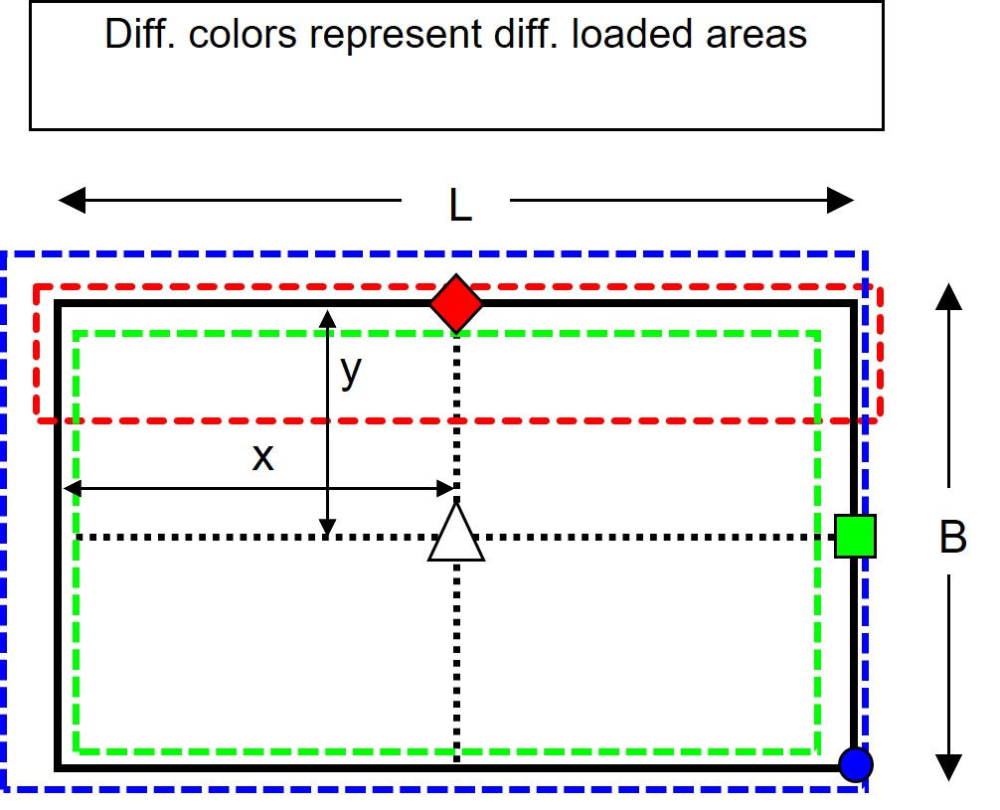
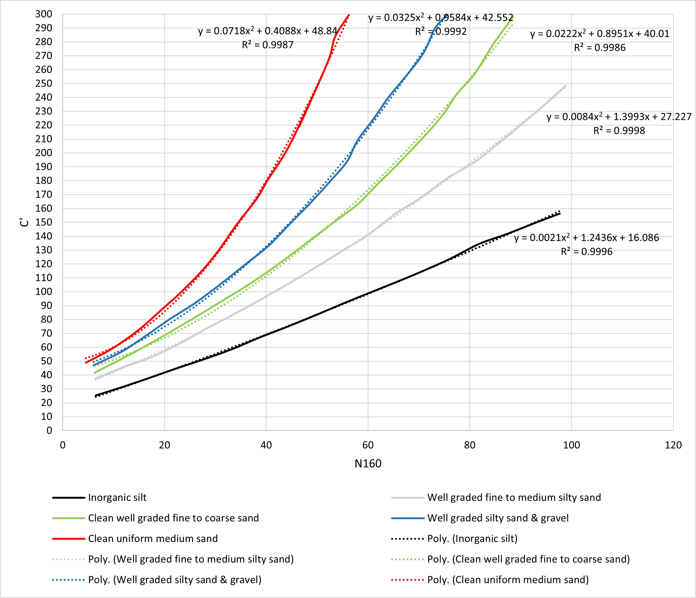

Bearing Capacity of Shallow Foundations#
Ground Profile#
import json
import pandas as pd
import numpy as np
import math
ground_info = {
"ground_elevation": 10, # unit: ft
"slope_a": 15, # unit: ft
"surface_elevation": 67, # unit: ft
"surcharge_weight": 125, # unit: ft
"ground_water_depth": 42, # unit: ft
"overburden_load": 0.250, # unit: ksf
"footing_shape": "rectangular", # or circular
"footing_embedment": 2.0, # unit: ft
"footing_width": 5.0, # unit: ft
"footing_length": 45, # unit: ft
## soil_type can only be chosen from supported types:
# "inorganic silt" , "well graded fine to medium silty sand" , "clean well graded fine to coarse sand"
# "well graded silty sand & gravel" , "well graded silty sand & gravel" , "clean uniform medium sand"
# type layer information to this section
"layers": [
{"ESU":"3D", "top":67, "bottom":64.5, "soil_type":"well graded silty sand & gravel",
"sat_unit_weight": 140, "AASHTO_N1":55},
{"ESU":"3C", "top":64.5, "bottom":62, "soil_type":"well graded silty sand & gravel",
"sat_unit_weight": 135, "AASHTO_N1":38},
{"ESU":"3C", "top":62, "bottom":59.5, "soil_type":"well graded silty sand & gravel",
"sat_unit_weight": 135, "AASHTO_N1":42},
{"ESU":"3C", "top":59.5, "bottom":57, "soil_type":"well graded silty sand & gravel",
"sat_unit_weight": 135, "AASHTO_N1":45},
{"ESU":"3D", "top":57, "bottom":52, "soil_type":"well graded silty sand & gravel",
"sat_unit_weight": 140, "AASHTO_N1":58},
{"ESU":"3D", "top":52, "bottom":47, "soil_type":"well graded silty sand & gravel",
"sat_unit_weight": 140, "AASHTO_N1":100},
{"ESU":"3D", "top":47, "bottom":42, "soil_type":"well graded silty sand & gravel",
"sat_unit_weight": 140, "AASHTO_N1":100},
{"ESU":"3D", "top":42, "bottom":37, "soil_type":"well graded silty sand & gravel",
"sat_unit_weight": 140, "AASHTO_N1":75},
{"ESU":"3D", "top":37, "bottom":32, "soil_type":"well graded silty sand & gravel",
"sat_unit_weight": 130, "AASHTO_N1":100},
{"ESU":"3D", "top":32, "bottom":27, "soil_type":"well graded silty sand & gravel",
"sat_unit_weight": 130, "AASHTO_N1":100},
{"ESU":"3D", "top":27, "bottom":22, "soil_type":"well graded silty sand & gravel",
"sat_unit_weight": 130, "AASHTO_N1":100},
{"ESU":"3D", "top":22, "bottom":17, "soil_type":"well graded silty sand & gravel",
"sat_unit_weight": 130, "AASHTO_N1":55},
{"ESU":"3D", "top":17, "bottom":12, "soil_type":"well graded silty sand & gravel",
"sat_unit_weight": 130, "AASHTO_N1":100},
{"ESU":"3D", "top":12, "bottom":7, "soil_type":"well graded silty sand & gravel",
"sat_unit_weight": 130, "AASHTO_N1":100},
{"ESU":"4D", "top":7, "bottom":2, "soil_type":"inorganic silt",
"sat_unit_weight": 130, "AASHTO_N1":100},
{"ESU":"4C", "top":2, "bottom":-6, "soil_type":"inorganic silt",
"sat_unit_weight": 120, "AASHTO_N1":70},
{"ESU":"4D", "top":-6, "bottom":-8, "soil_type":"inorganic silt",
"sat_unit_weight": 130, "AASHTO_N1":100},
{"ESU":"4D", "top":-8, "bottom":-13, "soil_type":"inorganic silt",
"sat_unit_weight": 130, "AASHTO_N1":100},
{"ESU":"4D", "top":-13, "bottom":-18, "soil_type":"inorganic silt",
"sat_unit_weight": 130, "AASHTO_N1":100},
{"ESU":"4D", "top":-18, "bottom":-23, "soil_type":"inorganic silt",
"sat_unit_weight": 130, "AASHTO_N1":100},
{"ESU":"4D", "top":-23, "bottom":-28, "soil_type":"inorganic silt",
"sat_unit_weight": 130, "AASHTO_N1":100},
{"ESU":"4D", "top":-28, "bottom":-33, "soil_type":"inorganic silt",
"sat_unit_weight": 130, "AASHTO_N1":78},
{"ESU":"4C", "top":-33, "bottom":-38, "soil_type":"inorganic silt",
"sat_unit_weight": 120, "AASHTO_N1":47},
{"ESU":"4D", "top":-38, "bottom":-43, "soil_type":"inorganic silt",
"sat_unit_weight": 130, "AASHTO_N1":42},
]
}
with open('ground_info.json', 'w') as outfile:
json.dump(ground_info , outfile)
Preliminary calculation to prepare data such as the depth and the thickness of each layer, and the vertical stress distribution for later calculation. The data is shown in the form of dataframe. The DataFrame allows to present data and results in a spreadsheet-like way. User can call the data in cell by typing table_name.loc[row_number][column_lable]. For example, ground_table.loc[1]['AASHTO_N1'] returns value 38. Notice that the order of rows starts from zero.
Show code cell source
with open("ground_info.json", "r") as read_file:
ground_data = json.load(read_file)
layer_num = len(ground_data["layers"])
ESU=[]
top=[]
bottom=[]
soil_type=[]
sat_unit_weight=[]
AASHTO_N1=[]
for i in range(0, layer_num):
ESU.append(ground_data["layers"][i]["ESU"])
top.append(ground_data["layers"][i]["top"])
bottom.append(ground_data["layers"][i]["bottom"])
soil_type.append(ground_data["layers"][i]["soil_type"])
sat_unit_weight.append(ground_data["layers"][i]["sat_unit_weight"])
AASHTO_N1.append(ground_data["layers"][i]["AASHTO_N1"])
temp = {'ESU': ESU,
'top':top,'bottom':bottom,
'soil_type':soil_type,
'$\gamma_{sat}$':sat_unit_weight,
'AASHTO_N1':AASHTO_N1}
ground_table = pd.DataFrame(temp)
## complete geometric information. e.g., depth of layer_top and layer_bottom, and the thickness of this layer
top_e = top # top profile after excavation
if top_e[0] > (ground_data["surface_elevation"]-ground_data["footing_embedment"]):
top_e[0] = (ground_data["surface_elevation"]-ground_data["footing_embedment"])
depth_top=[]
depth_bottom=[]
midpoint_depth_below_footing=[]
layer_thickness=[]
sig_vo_bot =[]
sig_vo_mid =[]
u_mid=[] # water pressure
sig_vo_ef=[] # effective stress at the mid of layer
AASHTO_C=[] # AASHTO Fig 10.6.2.4.2-1
for i in range(0, layer_num):
depth_top.append(ground_data["surface_elevation"]-ground_data["layers"][i]["top"])
depth_top[0]=ground_data["footing_embedment"]
depth_bottom.append(ground_data["surface_elevation"]-ground_data["layers"][i]["bottom"])
midpoint_depth_below_footing.append((ground_data["surface_elevation"]-ground_data["footing_embedment"])-
(top_e[i]+bottom[i])/2)
layer_thickness.append(top_e[i]-bottom[i])
if i == 0:
sig_vo_bot.append((top_e[i]-bottom[i])*ground_data["layers"][i]["sat_unit_weight"]+
ground_data["overburden_load"]*1000)
sig_vo_mid.append((top_e[i]-bottom[i])/2*ground_data["layers"][i]["sat_unit_weight"]+
ground_data["overburden_load"]*1000)
else:
sig_vo_bot.append((top_e[i]-bottom[i])*ground_data["layers"][i]["sat_unit_weight"]+sig_vo_bot[i-1])
sig_vo_mid.append((top_e[i]-bottom[i])/2*ground_data["layers"][i]["sat_unit_weight"]+sig_vo_bot[i-1])
if (depth_top[0]+midpoint_depth_below_footing[i])<ground_data["ground_water_depth"]:
u_mid.append(0)
else:
u_mid.append((depth_top[0]+midpoint_depth_below_footing[i]-ground_data["ground_water_depth"])*62.4)
sig_vo_ef.append(sig_vo_mid[i]-u_mid[i])
# calculate AASHTO coefficients base on 10.6.2.4.2-1
if ground_data["layers"][i]["soil_type"] == "inorganic silt":
k=ground_data["layers"][i]["AASHTO_N1"]
AASHTO_C.append(max(min(0.0021*k**2+1.243*k+16.086, 161), 22))
elif ground_data["layers"][i]["soil_type"] == "well graded fine to medium silty sand":
k=ground_data["layers"][i]["AASHTO_N1"]
AASHTO_C.append(max(min(0.0084*k**2+1.3993*k+27.227, 252), 34))
elif ground_data["layers"][i]["soil_type"] == "clean well graded fine to coarse sand":
k=ground_data["layers"][i]["AASHTO_N1"]
AASHTO_C.append(max(min(0.0222*k**2+0.8951*k+40.01, 300), 38))
elif ground_data["layers"][i]["soil_type"] == "well graded silty sand & gravel":
k=ground_data["layers"][i]["AASHTO_N1"]
AASHTO_C.append(max(min(0.0325*k**2+0.9584*k+42.552, 300), 42))
elif ground_data["layers"][i]["soil_type"] == "well graded silty sand & gravel":
k=ground_data["layers"][i]["AASHTO_N1"]
AASHTO_C.append(max(min(0.0325*k**2+0.9584*k+42.552, 300), 42))
elif ground_data["layers"][i]["soil_type"] == "clean uniform medium sand":
k=ground_data["layers"][i]["AASHTO_N1"]
AASHTO_C.append(max(min(0.0718*k**2+0.4088*k+48.84, 300), 47))
# merge data to dataframe
ground_table['depth_top']=depth_top
ground_table['depth_bottom']=depth_bottom
ground_table['z_mid']=midpoint_depth_below_footing
ground_table['layer_thickness']=layer_thickness
ground_table['sig_vo_bot']=sig_vo_bot
ground_table['sig_vo_mid']=sig_vo_mid
ground_table['u_mid']=u_mid
ground_table['sig_vo_ef']=sig_vo_ef
ground_table['AASHTO_C']=AASHTO_C
ground_table
| ESU | top | bottom | soil_type | $\gamma_{sat}$ | AASHTO_N1 | depth_top | depth_bottom | z_mid | layer_thickness | sig_vo_bot | sig_vo_mid | u_mid | sig_vo_ef | AASHTO_C | |
|---|---|---|---|---|---|---|---|---|---|---|---|---|---|---|---|
| 0 | 3D | 67.0 | 64.5 | well graded silty sand & gravel | 140 | 55 | 2.0 | 2.5 | 0.25 | 0.5 | 320.0 | 285.00 | 0.0 | 285.00 | 193.5765 |
| 1 | 3C | 64.5 | 62.0 | well graded silty sand & gravel | 135 | 38 | 2.5 | 5.0 | 1.75 | 2.5 | 657.5 | 488.75 | 0.0 | 488.75 | 125.9012 |
| 2 | 3C | 62.0 | 59.5 | well graded silty sand & gravel | 135 | 42 | 5.0 | 7.5 | 4.25 | 2.5 | 995.0 | 826.25 | 0.0 | 826.25 | 140.1348 |
| 3 | 3C | 59.5 | 57.0 | well graded silty sand & gravel | 135 | 45 | 7.5 | 10.0 | 6.75 | 2.5 | 1332.5 | 1163.75 | 0.0 | 1163.75 | 151.4925 |
| 4 | 3D | 57.0 | 52.0 | well graded silty sand & gravel | 140 | 58 | 10.0 | 15.0 | 10.50 | 5.0 | 2032.5 | 1682.50 | 0.0 | 1682.50 | 207.4692 |
| 5 | 3D | 52.0 | 47.0 | well graded silty sand & gravel | 140 | 100 | 15.0 | 20.0 | 15.50 | 5.0 | 2732.5 | 2382.50 | 0.0 | 2382.50 | 300.0000 |
| 6 | 3D | 47.0 | 42.0 | well graded silty sand & gravel | 140 | 100 | 20.0 | 25.0 | 20.50 | 5.0 | 3432.5 | 3082.50 | 0.0 | 3082.50 | 300.0000 |
| 7 | 3D | 42.0 | 37.0 | well graded silty sand & gravel | 140 | 75 | 25.0 | 30.0 | 25.50 | 5.0 | 4132.5 | 3782.50 | 0.0 | 3782.50 | 297.2445 |
| 8 | 3D | 37.0 | 32.0 | well graded silty sand & gravel | 130 | 100 | 30.0 | 35.0 | 30.50 | 5.0 | 4782.5 | 4457.50 | 0.0 | 4457.50 | 300.0000 |
| 9 | 3D | 32.0 | 27.0 | well graded silty sand & gravel | 130 | 100 | 35.0 | 40.0 | 35.50 | 5.0 | 5432.5 | 5107.50 | 0.0 | 5107.50 | 300.0000 |
| 10 | 3D | 27.0 | 22.0 | well graded silty sand & gravel | 130 | 100 | 40.0 | 45.0 | 40.50 | 5.0 | 6082.5 | 5757.50 | 31.2 | 5726.30 | 300.0000 |
| 11 | 3D | 22.0 | 17.0 | well graded silty sand & gravel | 130 | 55 | 45.0 | 50.0 | 45.50 | 5.0 | 6732.5 | 6407.50 | 343.2 | 6064.30 | 193.5765 |
| 12 | 3D | 17.0 | 12.0 | well graded silty sand & gravel | 130 | 100 | 50.0 | 55.0 | 50.50 | 5.0 | 7382.5 | 7057.50 | 655.2 | 6402.30 | 300.0000 |
| 13 | 3D | 12.0 | 7.0 | well graded silty sand & gravel | 130 | 100 | 55.0 | 60.0 | 55.50 | 5.0 | 8032.5 | 7707.50 | 967.2 | 6740.30 | 300.0000 |
| 14 | 4D | 7.0 | 2.0 | inorganic silt | 130 | 100 | 60.0 | 65.0 | 60.50 | 5.0 | 8682.5 | 8357.50 | 1279.2 | 7078.30 | 161.0000 |
| 15 | 4C | 2.0 | -6.0 | inorganic silt | 120 | 70 | 65.0 | 73.0 | 67.00 | 8.0 | 9642.5 | 9162.50 | 1684.8 | 7477.70 | 113.3860 |
| 16 | 4D | -6.0 | -8.0 | inorganic silt | 130 | 100 | 73.0 | 75.0 | 72.00 | 2.0 | 9902.5 | 9772.50 | 1996.8 | 7775.70 | 161.0000 |
| 17 | 4D | -8.0 | -13.0 | inorganic silt | 130 | 100 | 75.0 | 80.0 | 75.50 | 5.0 | 10552.5 | 10227.50 | 2215.2 | 8012.30 | 161.0000 |
| 18 | 4D | -13.0 | -18.0 | inorganic silt | 130 | 100 | 80.0 | 85.0 | 80.50 | 5.0 | 11202.5 | 10877.50 | 2527.2 | 8350.30 | 161.0000 |
| 19 | 4D | -18.0 | -23.0 | inorganic silt | 130 | 100 | 85.0 | 90.0 | 85.50 | 5.0 | 11852.5 | 11527.50 | 2839.2 | 8688.30 | 161.0000 |
| 20 | 4D | -23.0 | -28.0 | inorganic silt | 130 | 100 | 90.0 | 95.0 | 90.50 | 5.0 | 12502.5 | 12177.50 | 3151.2 | 9026.30 | 161.0000 |
| 21 | 4D | -28.0 | -33.0 | inorganic silt | 130 | 78 | 95.0 | 100.0 | 95.50 | 5.0 | 13152.5 | 12827.50 | 3463.2 | 9364.30 | 125.8164 |
| 22 | 4C | -33.0 | -38.0 | inorganic silt | 120 | 47 | 100.0 | 105.0 | 100.50 | 5.0 | 13752.5 | 13452.50 | 3775.2 | 9677.30 | 79.1459 |
| 23 | 4D | -38.0 | -43.0 | inorganic silt | 130 | 42 | 105.0 | 110.0 | 105.50 | 5.0 | 14402.5 | 14077.50 | 4087.2 | 9990.30 | 71.9964 |
Footing Calculation#
Goemetries of footing.
{kind=link}
Manually change the value of the footing geometries in this section. Then click run to import the data in this section to the program.
footing_width = 30 # B, unit: ft
footing_length = 45 # L, unit: ft
cal_x = footing_length/2
cal_y = footing_width/2
influence_z = 2*footing_width # depth of influence, 2*W for squrare footing, 6*W for infinite footing.
# footing load
load = 84.1 # unit: ksf
req_load = 50 # unit: kips
stress = 0.521 # unit: ksf
Footing calculation. The outputs is printed below. Click the + symbol to check the calculation progress. The calculation based upon Newmarks solution of the Boussinesq Equation.
Show code cell source
# empty arraies to store calculation result
influence_check=[]
actual_depth=[]
x_z=[] # m = x/z
y_z=[] # n = y/z
l_z=[] # footing_length / z
b_z=[] # footing_width / z
# influence factor
l_b_center=[]
l_y_edge=[]
x_y_corner=[]
l_b_edge=[]
l_b_corner=[]
# load
l_b_center_q=[] # 'q' = I * q (coefficient * applied load)
l_y_edge_q=[] # unit: ksf
x_y_corner_q=[]
l_b_edge_q=[]
l_b_corner_q=[]
for i in range(0, layer_num):
if depth_bottom[i] < influence_z:
influence_check.append(1)
else:
influence_check.append(0)
actual_depth.append((depth_top[i]+depth_bottom[i])/2)
x_z.append(cal_x/midpoint_depth_below_footing[i])
y_z.append(cal_y/midpoint_depth_below_footing[i])
l_z.append(footing_length/midpoint_depth_below_footing[i])
b_z.append(footing_width/midpoint_depth_below_footing[i])
# calculate coefficient at x_y corner
if (x_z[i]**2*y_z[i]**2)>(x_z[i]**2+y_z[i]**2+1):
x_y_corner.append((2*x_z[i]*y_z[i]*math.sqrt(x_z[i]**2+y_z[i]**2+1)/(x_z[i]**2+y_z[i]**2+1+x_z[i]**2*y_z[i]**2)*
(x_z[i]**2+y_z[i]**2+2)/(x_z[i]**2+y_z[i]**2+1) + np.arctan(2*x_z[i]*y_z[i]*math.sqrt(x_z[i]**2+y_z[i]**2+1)/
(x_z[i]**2+y_z[i]**2+1-x_z[i]**2*y_z[i]**2))+math.pi)/(4*math.pi))
else:
x_y_corner.append((2*x_z[i]*y_z[i]*math.sqrt(x_z[i]**2+y_z[i]**2+1)/(x_z[i]**2+y_z[i]**2+1+x_z[i]**2*y_z[i]**2)*
(x_z[i]**2+y_z[i]**2+2)/(x_z[i]**2+y_z[i]**2+1) + np.arctan(2*x_z[i]*y_z[i]*math.sqrt(x_z[i]**2+y_z[i]**2+1)/
(x_z[i]**2+y_z[i]**2+1-x_z[i]**2*y_z[i]**2)))/(4*math.pi))
# calculate coefficient at l_b_edge
if (y_z[i]**2*l_z[i]**2)>(y_z[i]**2+l_z[i]**2+1):
l_b_edge.append(2*((2*y_z[i]*l_z[i]*math.sqrt(y_z[i]**2+l_z[i]**2+1)/(y_z[i]**2+l_z[i]**2+1+y_z[i]**2*l_z[i]**2)*
(y_z[i]**2+l_z[i]**2+2)/(y_z[i]**2+l_z[i]**2+1) + np.arctan(2*y_z[i]*l_z[i]*math.sqrt(y_z[i]**2+l_z[i]**2+1)/
(y_z[i]**2+l_z[i]**2+1-y_z[i]**2*l_z[i]**2))+math.pi)/(4*math.pi)))
else:
l_b_edge.append(2*((2*y_z[i]*l_z[i]*math.sqrt(y_z[i]**2+l_z[i]**2+1)/(y_z[i]**2+l_z[i]**2+1+y_z[i]**2*l_z[i]**2)*
(y_z[i]**2+l_z[i]**2+2)/(y_z[i]**2+l_z[i]**2+1) + np.arctan(2*y_z[i]*l_z[i]*math.sqrt(y_z[i]**2+l_z[i]**2+1)/
(y_z[i]**2+l_z[i]**2+1-y_z[i]**2*l_z[i]**2)))/(4*math.pi)))
# calculate coefficient at l_b_corner
if (l_z[i]**2*b_z[i]**2)>(l_z[i]**2+b_z[i]**2+1):
l_b_corner.append((2*l_z[i]*b_z[i]*math.sqrt(l_z[i]**2+b_z[i]**2+1)/(l_z[i]**2+b_z[i]**2+1+l_z[i]**2*b_z[i]**2)*
(l_z[i]**2+b_z[i]**2+2)/(l_z[i]**2+b_z[i]**2+1) + np.arctan(2*l_z[i]*b_z[i]*math.sqrt(l_z[i]**2+b_z[i]**2+1)/
(l_z[i]**2+b_z[i]**2+1-l_z[i]**2*b_z[i]**2))+math.pi)/(4*math.pi))
else:
l_b_corner.append((2*l_z[i]*b_z[i]*math.sqrt(l_z[i]**2+b_z[i]**2+1)/(l_z[i]**2+b_z[i]**2+1+l_z[i]**2*b_z[i]**2)*
(l_z[i]**2+b_z[i]**2+2)/(l_z[i]**2+b_z[i]**2+1) + np.arctan(2*l_z[i]*b_z[i]*math.sqrt(l_z[i]**2+b_z[i]**2+1)/
(l_z[i]**2+b_z[i]**2+1-l_z[i]**2*b_z[i]**2)))/(4*math.pi))
# calculate coefficient at l_y_edge
l_y_edge.append(2*x_y_corner[i])
# calculate coefficient at l_b_center
l_b_center.append(2*l_y_edge[i])
####### footing load ########
# unit: ksf
l_b_center_q.append(l_b_center[i]*load)
l_y_edge_q.append(l_y_edge[i]*load)
x_y_corner_q.append(x_y_corner[i]*load)
l_b_edge_q.append(l_b_edge[i]*load)
l_b_corner_q.append(l_b_corner[i]*load)
temp = {'depth_top': depth_top,
'depth_bottom':depth_bottom,
'layer_thickness':layer_thickness,
'influence_check':influence_check,
'z_mid':midpoint_depth_below_footing}
boussinesq_table = pd.DataFrame(temp)
boussinesq_table['actual_depth']=actual_depth
boussinesq_table['m = x/z']=x_z
boussinesq_table['n = y/z']=y_z
boussinesq_table['M = L/z']=l_z
boussinesq_table['N = B/z']=b_z
boussinesq_table['Center L by B area']=l_b_center
boussinesq_table['Edge L by y area']=l_y_edge
boussinesq_table['Corner x by y area']=x_y_corner
boussinesq_table['Edge L by B area']=l_b_edge
boussinesq_table['Corner L by B area']=l_b_corner
boussinesq_table['Center L by B area']=l_b_center_q
boussinesq_table['Edge L by y area']=l_y_edge_q
boussinesq_table['Corner x by y area']=x_y_corner_q
boussinesq_table['Edge L by B area']=l_b_edge_q
boussinesq_table['Corner L by B area']=l_b_corner_q
boussinesq_table
| depth_top | depth_bottom | layer_thickness | influence_check | z_mid | actual_depth | m = x/z | n = y/z | M = L/z | N = B/z | Center L by B area | Edge L by y area | Corner x by y area | Edge L by B area | Corner L by B area | |
|---|---|---|---|---|---|---|---|---|---|---|---|---|---|---|---|
| 0 | 2.0 | 2.5 | 0.5 | 1 | 0.25 | 2.25 | 90.000000 | 60.000000 | 180.000000 | 120.000000 | 84.099805 | 42.049902 | 21.024951 | 42.049916 | 21.024994 |
| 1 | 2.5 | 5.0 | 2.5 | 1 | 1.75 | 3.75 | 12.857143 | 8.571429 | 25.714286 | 17.142857 | 84.034050 | 42.017025 | 21.008512 | 42.021746 | 21.022916 |
| 2 | 5.0 | 7.5 | 2.5 | 1 | 4.25 | 6.25 | 5.294118 | 3.529412 | 10.588235 | 7.058824 | 83.220531 | 41.610266 | 20.805133 | 41.674831 | 20.995689 |
| 3 | 7.5 | 10.0 | 2.5 | 1 | 6.75 | 8.75 | 3.333333 | 2.222222 | 6.666667 | 4.444444 | 80.978532 | 40.489266 | 20.244633 | 40.727534 | 20.911394 |
| 4 | 10.0 | 15.0 | 5.0 | 1 | 10.50 | 12.50 | 2.142857 | 1.428571 | 4.285714 | 2.857143 | 74.910195 | 37.455098 | 18.727549 | 38.203792 | 20.628076 |
| 5 | 15.0 | 20.0 | 5.0 | 1 | 15.50 | 17.50 | 1.451613 | 0.967742 | 2.903226 | 1.935484 | 63.998709 | 31.999354 | 15.999677 | 33.748813 | 19.911996 |
| 6 | 20.0 | 25.0 | 5.0 | 1 | 20.50 | 22.50 | 1.097561 | 0.731707 | 2.195122 | 1.463415 | 52.884314 | 26.442157 | 13.221078 | 29.228375 | 18.848872 |
| 7 | 25.0 | 30.0 | 5.0 | 1 | 25.50 | 27.50 | 0.882353 | 0.588235 | 1.764706 | 1.176471 | 43.198586 | 21.599293 | 10.799647 | 25.203420 | 17.551370 |
| 8 | 30.0 | 35.0 | 5.0 | 1 | 30.50 | 32.50 | 0.737705 | 0.491803 | 1.475410 | 0.983607 | 35.308418 | 17.654209 | 8.827105 | 21.777583 | 16.142592 |
| 9 | 35.0 | 40.0 | 5.0 | 1 | 35.50 | 37.50 | 0.633803 | 0.422535 | 1.267606 | 0.845070 | 29.053202 | 14.526601 | 7.263301 | 18.898560 | 14.721181 |
| 10 | 40.0 | 45.0 | 5.0 | 1 | 40.50 | 42.50 | 0.555556 | 0.370370 | 1.111111 | 0.740741 | 24.131685 | 12.065843 | 6.032921 | 16.481590 | 13.353260 |
| 11 | 45.0 | 50.0 | 5.0 | 1 | 45.50 | 47.50 | 0.494505 | 0.329670 | 0.989011 | 0.659341 | 20.251082 | 10.125541 | 5.062771 | 14.446632 | 12.076935 |
| 12 | 50.0 | 55.0 | 5.0 | 1 | 50.50 | 52.50 | 0.445545 | 0.297030 | 0.891089 | 0.594059 | 17.169779 | 8.584890 | 4.292445 | 12.726265 | 10.910053 |
| 13 | 55.0 | 60.0 | 5.0 | 0 | 55.50 | 57.50 | 0.405405 | 0.270270 | 0.810811 | 0.540541 | 14.700519 | 7.350260 | 3.675130 | 11.265406 | 9.857288 |
| 14 | 60.0 | 65.0 | 5.0 | 0 | 60.50 | 62.50 | 0.371901 | 0.247934 | 0.743802 | 0.495868 | 12.701785 | 6.350893 | 3.175446 | 10.019314 | 8.915451 |
| 15 | 65.0 | 73.0 | 8.0 | 0 | 67.00 | 69.00 | 0.335821 | 0.223881 | 0.671642 | 0.447761 | 10.635768 | 5.317884 | 2.658942 | 8.661495 | 7.844420 |
| 16 | 73.0 | 75.0 | 2.0 | 0 | 72.00 | 74.00 | 0.312500 | 0.208333 | 0.625000 | 0.416667 | 9.359231 | 4.679615 | 2.339808 | 7.782176 | 7.126544 |
| 17 | 75.0 | 80.0 | 5.0 | 0 | 75.50 | 77.50 | 0.298013 | 0.198675 | 0.596026 | 0.397351 | 8.593155 | 4.296578 | 2.148289 | 7.238090 | 6.672991 |
| 18 | 80.0 | 85.0 | 5.0 | 0 | 80.50 | 82.50 | 0.279503 | 0.186335 | 0.559006 | 0.372671 | 7.647429 | 3.823714 | 1.911857 | 6.548114 | 6.087697 |
| 19 | 85.0 | 90.0 | 5.0 | 0 | 85.50 | 87.50 | 0.263158 | 0.175439 | 0.526316 | 0.350877 | 6.845746 | 3.422873 | 1.711436 | 5.946324 | 5.568093 |
| 20 | 90.0 | 95.0 | 5.0 | 0 | 90.50 | 92.50 | 0.248619 | 0.165746 | 0.497238 | 0.331492 | 6.160997 | 3.080499 | 1.540249 | 5.419215 | 5.106088 |
| 21 | 95.0 | 100.0 | 5.0 | 0 | 95.50 | 97.50 | 0.235602 | 0.157068 | 0.471204 | 0.314136 | 5.572000 | 2.786000 | 1.393000 | 4.955607 | 4.694492 |
| 22 | 100.0 | 105.0 | 5.0 | 0 | 100.50 | 102.50 | 0.223881 | 0.149254 | 0.447761 | 0.298507 | 5.062053 | 2.531026 | 1.265513 | 4.546218 | 4.326989 |
| 23 | 105.0 | 110.0 | 5.0 | 0 | 105.50 | 107.50 | 0.213270 | 0.142180 | 0.426540 | 0.284360 | 4.617870 | 2.308935 | 1.154468 | 4.183311 | 3.998069 |
Plot the geostatic stress distribution, excessive stress distribution, the table of ground condition, and the table of footing dimensions to the Haley Aldrich template.
Show code cell source
from hapy.plotting import HCFigure
import datetime as datetime
import numpy as np
asdf = HCFigure(style = 'ha',
title="HA-204 PRELIMINARY SETTLEMENT \nDUE TO NEW FILL",
author='Cal',
date=datetime.datetime.now(),
filename='file',
size=[8.5, 11],
orientation='p',
city='Sparrows Point',
state='Maryland',
sitename='aes Sparrows point Lng Terminal',
prjnum='XXXX-XX',
prjname='Sparrows Point LNG',
fignum='32907-260',
# do not number bullet points of notes
note=["REF: ELASTIC SOLUTIONS FOR SOIL AND ROCK MECHANICS, BY H.G. POULOS & E.H. DAVIS",
"REF: AN INTRODUCTION TO GEOTECHNICAL ENGINEERING, BY R.D. HOLTZ & W.D. KOVACS"]
)
# Plot geostatic stress distribution
loadAx = asdf.addPlotAxes([0.28, 0.73, 0.5, 0.2]) # define the position of ground stress plot
loadAx.plot(u_mid, depth_top, label='water pressure')
loadAx.plot(sig_vo_ef, depth_top, label='effective stress')
loadAx.plot(sig_vo_mid, depth_top, label='total stress')
loadAx.legend()
loadAx.set_ylim(loadAx.get_ylim()[::-1])
loadAx.set_xlabel('Geostatic stress (pcf)')
loadAx.set_ylabel('Depth (ft)')
loadAx.grid()
# plot vertical excessive stress distribution
stressAx = asdf.addPlotAxes([0.28, 0.46, 0.5, 0.2]) # define the position of plot
stressAx.plot(l_b_center_q, depth_top)
stressAx.set_ylim(stressAx.get_ylim()[::-1])
# stressAx.set_xlim(stressAx.get_xlim()[::-1])
stressAx.set_xlabel('Applied Stress (psf)')
stressAx.set_ylabel('Depth (ft)')
stressAx.grid()
# plot the tables of ground and footing information
tableAx1 = asdf.addPlotAxes([0.28, 0.15, 0.25, 0.2])
tableAx1.axis('tight')
tableAx1.axis('off')
tableAx1.set_title('Surface & Groundwater Conditions', loc='right')
temp_data = pd.DataFrame([ground_data["surface_elevation"], ground_data["ground_water_depth"],
ground_data["surcharge_weight"], ground_data["overburden_load"]])
tableAx1.table(cellText = temp_data.values,
rowLabels=["surface elevation (ft)","ground water depth (ft)","Density of overburden (pcf)","overburden load (ksf)"],
colWidths=[0.45,0.5],
loc="upper right")
# plot the tables of ground and footing information
tableAx2 = asdf.addPlotAxes([0.6, 0.15, 0.25, 0.2])
tableAx2.axis('tight')
tableAx2.axis('off')
tableAx2.set_title('Footing DImensions')
temp_data = pd.DataFrame([ground_data["footing_shape"], ground_data["footing_embedment"],
ground_data["footing_width"], ground_data["footing_length"]])
tableAx2.table(cellText = temp_data.values,
rowLabels=["Footing shape","Embedment, $D_r$ (ft)","Footing width, B (ft)","Footing length, L (ft)"],
colWidths=[0.45,0.5],
loc="upper right")
asdf.add_text()
asdf.saveHCFigure("soil_profile_page.pdf")
---------------------------------------------------------------------------
ModuleNotFoundError Traceback (most recent call last)
Cell In[5], line 1
----> 1 from hapy.plotting import HCFigure
2 import datetime as datetime
3 import numpy as np
ModuleNotFoundError: No module named 'hapy'
Settlement Calculation#
Calculate compression of each layer by following Hough, AASHTO, and WSDOT method. Click + to check the calculating progress. The total settlement result will be plotted with footing bearing capacity.
Show code cell source
temp = {'depth_top (ft)': depth_top,
'depth_bottom (ft)':depth_bottom,
'z_mid (ft)':midpoint_depth_below_footing,
'actual_depth (ft)':actual_depth,
'layer_thickness (ft)':layer_thickness,
'AASHTO_C':AASHTO_C,
'sig_vo_ef':sig_vo_ef,
'sig_v':l_b_center_q # the excessive load from footing
}
settlement_table=pd.DataFrame(temp)
dh_hough = [] # store resutls of Hough method
dh_aashto = [] # store AASHTO result
dh_wsdot = [] # store results suggested by WSDOT
sig_vf_ef = [] # required by Hough method, = sig_vo_ef + sig_v
for i in range(0, layer_num):
sig_vf_ef.append(l_b_center_q[i]*1000+sig_vo_ef[i])
# Hough method, unit: ft
dh_hough.append(layer_thickness[i]/AASHTO_C[i]*math.log10(sig_vf_ef[i]/sig_vo_ef[i]))
#AASHTO, unit: in
dh_aashto.append(dh_hough[i]*12)
# WSDOT reducement
if ground_data["layers"][i]["AASHTO_N1"]>20 and dh_hough[i]:
dh_wsdot.append(dh_aashto[i]/1.5)
## Total settlement for each layer
dh_total_aashto = np.transpose(np.zeros(layer_num))
dh_total_wsdot = np.transpose(np.zeros(layer_num))
for i in range(layer_num-1, -1, -1):
if i == (layer_num-1):
dh_total_aashto[i] = dh_aashto[i]
dh_total_wsdot[i] = dh_wsdot[i]
else:
dh_total_aashto[i] = dh_aashto[i] + dh_total_aashto[i+1]
dh_total_wsdot[i] = dh_wsdot[i] + dh_total_wsdot[i+1]
# merge results to settlement calculation table
settlement_table['$\Delta H_i Hough$']=dh_hough
settlement_table['$\Delta H_i$ AASHTO']=dh_aashto
settlement_table['$\Delta H_i$ WSDOT']=dh_wsdot
settlement_table['$\Sigma \Delta H_i$ AASHTO']=dh_total_aashto
settlement_table['$\Sigma \Delta H_i$ WSDOT']=dh_total_wsdot
settlement_table
Bearing Capacity Mult Scenario#
Input soils properties. The bearing capacity factors can be found according to the following figure (fig 10.6.3.1.2a-1).

The above figure is digitized and approximated by polynomial trend line. User can following the formulas to calculate the value of parameters. This program does not provide automatical calculation, although it is easy to implement. The major reason is that human judgement is very necessary to choose the layer for bearing capacity calcualtion. For example, top layer is strong, but the embedment is very close to the 2nd layer and the 2nd layer is weak. In this case, it might be necessary for user to use the properties of the 2nd layer for calculation.
{kind=link}
Type in geometries and the parameters manually. Then click run to input data to the program.
# Bearing capacity factors
n_c = 35.5
n_q = 23.2
n_y = 30.2
slope = 'yes' # or = 'no'
friction_angle = 32 # unit: degrees
cohesion = 0 # unit: psf
soil_weight_above_gwt = 120 # unit: pcf
foundation_depth = 2 # unit: ft
depth_to_gwt = 42 # unit: ft
lower_bound_of_length = 45 # footing dimensions. Used for searching best L*B
lower_bound_of_width = 5
varies_of_length = 1
varies_of_width = 7
upper_bound_of_length = 45
upper_bound_of_width = 23
streng_ls = 0.65 # strength limit state (Table 10.5.5.2.1-1)
ex_ls = 0.9 # extreme event limit state (WSDOT GDM)
The result of bearing capacity calculation is shown below. Click + button to check the detailed procedures.
## start calculation
f_b_temp = np.linspace(lower_bound_of_width, upper_bound_of_width, varies_of_width)
f_l_temp = np.linspace(lower_bound_of_length, upper_bound_of_length, varies_of_length)
f_b = np.zeros(len(f_b_temp)*len(f_l_temp))
f_l = np.zeros(len(f_b_temp)*len(f_l_temp))
f_b_l = np.zeros(len(f_b_temp)*len(f_l_temp))
case = np.array([i+1 for i in range(len(f_b_temp)*len(f_l_temp))])
case_num = len(case)
for i in range(0, len(f_l_temp)):
for j in range(0, len(f_b_temp)):
f_b[i*len(f_b_temp)+j] = f_b_temp[j]
f_l[i*len(f_b_temp)+j] = f_l_temp[i]
f_b_l[i*len(f_b_temp)+j] = f_b[i*len(f_b_temp)+j] / f_l[i*len(f_b_temp)+j]
temp = {'case': case,
'B': f_b,
'L': f_l,
'B/L': f_b_l
}
bearing_table = pd.DataFrame(temp)
## shape and inclination factors
s_c = []
i_c = []
s_q = []
i_q = []
s_y = []
i_y = []
d_q = []
n_cm = []
n_qm = []
n_ym = []
c_wy = []
c_wq = []
rc_bc = [0.213, 0.216, 0.220, 0.259, 0.298, 0.331, 0.36] # how to find this ???????
bearing_capacity_normal = [] # unit: ksf
bearing_capacity_slope = []
strength_limit_state = []
extreme_event_limit_state = []
for i in range(0, case_num):
if friction_angle > 0:
s_c.append(1 + bearing_table.loc[i]['B/L'] * (n_q/n_c))
s_q.append(1 + bearing_table.loc[i]['B/L'] * math.tan(friction_angle/180*math.pi))
s_y.append(1 - 0.4*bearing_table.loc[i]['B/L'])
else:
s_c.append(1+bearing_table.loc[i]['B/L']/5)
s_q.append(1)
s_y.append(1)
i_c.append(1)
i_q.append(1)
i_y.append(1)
d_q.append(1)
## N_cm, N_qm, and N_ym
n_cm.append(s_c[i]*n_c*i_c[i])
n_qm.append(n_q*s_q[i]*i_q[i]*d_q[i])
n_ym.append(n_y*s_y[i]*i_y[i])
if depth_to_gwt > foundation_depth:
c_wy.append(min((0.5+0.5*(depth_to_gwt/(1.5*f_b[i]+foundation_depth))), 1))
else:
c_wy.append(0.5)
if depth_to_gwt == 0:
c_wq.append(0.5)
elif depth_to_gwt == foundation_depth:
c_wq.append(min((0.5+0.5*depth_to_gwt/foundation_depth), 1))
else: c_wq.append(1)
# calculate bearing capacity
if lower_bound_of_width > lower_bound_of_length:
bearing_capacity_normal.append(0)
else:
bearing_capacity_normal.append(min((cohesion*n_cm[i] + soil_weight_above_gwt*foundation_depth*n_qm[i]*c_wq[i] +
0.5*soil_weight_above_gwt*f_b[i]*n_ym[i]*c_wy[i])/1000, 120))
bearing_capacity_slope.append(bearing_capacity_normal[i]*rc_bc[i])
strength_limit_state.append(bearing_capacity_slope[i]*streng_ls)
extreme_event_limit_state.append(bearing_capacity_slope[i]*ex_ls)
# add results to bearing capacity calculation table
bearing_table['s_c'] = s_c
bearing_table['i_c'] = i_c
bearing_table['s_q'] = s_q
bearing_table['i_q'] = i_q
bearing_table['s_y'] = s_y
bearing_table['i_y'] = i_y
bearing_table['d_q'] = d_q
bearing_table['n_cm'] =n_cm
bearing_table['n_qm'] = n_qm
bearing_table['n_ym'] = n_ym
bearing_table['c_wy'] = c_wy
bearing_table['c_wq'] = c_wq
bearing_table['rc_bc'] = rc_bc
bearing_table['bearing capacity normal (ksf)'] = bearing_capacity_normal
bearing_table['bearing capacity slope (ksf)'] = bearing_capacity_slope
bearing_table['strength limit state (ksf)'] = strength_limit_state
bearing_table['extreme event limit state (ksf)'] = extreme_event_limit_state
bearing_table
Plot bearing capacity result to figure template
Show code cell source
from hapy.plotting import HCFigure
import datetime as datetime
import numpy as np
asdf = HCFigure(style = 'ha',
title="HA-204 PRELIMINARY SETTLEMENT \nDUE TO NEW FILL",
author='Cal',
date=datetime.datetime.now(),
filename='file',
size=[8.5, 11],
orientation='l',
city='Sparrows Point',
state='Maryland',
sitename='aes Sparrows point Lng Terminal',
prjnum='XXXX-XX',
prjname='Sparrows Point LNG',
fignum='32907-260',
# do not number bullet points of notes
note=["Settlement estimates calculated based on Hough (1959). Soil layering and groundwater profile based on individual samples reported in boring XXXXX. Depth to bearing is approximately XXX feet from existing ground surface.",
"Footing assumed to be bearing on very dense granular soils at an elevation of XX feet (X feet below existing grade).",
"We have assumed no liquefaction occurs.",
"Footing length and width assumed to be equal (i.e. square footing). -OR- Footing length assumed constant at XX feet (i.e. rectangular footing).",
"The effective footing width for bearing pressure shall be calculated according to Section 6.4 of FHWA-SA-02-024 Geotechnical Engineering Circular No. 5 Shallow Foundations.",
"These recommendations are preliminary results only and are subject to change pending final evaluations of ESUs and site geometry."
]
)
# Plot geostatic stress distribution
bearAx = asdf.addPlotAxes([0.12, 0.33, 0.5, 0.5]) # define the position of ground stress plot
bearAx.plot(f_b, strength_limit_state, label='Strength limit state')
bearAx.plot(f_b, extreme_event_limit_state, label='extreme_event_limit_state')
bearAx.legend()
bearAx.set_xlabel('Effective Footing Width, B (Feet)')
bearAx.set_ylabel('Factored Bearing Capacity (ksf)')
bearAx.grid()
# plot the tables of footing information
footAx = asdf.addPlotAxes([0.67, 0.61, 0.25, 0.2])
footAx.axis('tight')
footAx.axis('off')
footAx.set_title('Footing information')
temp_data = pd.DataFrame([footing_width, footing_length, ground_data["footing_embedment"],cal_x, cal_y, influence_z])
footAx.table(cellText = temp_data.values,
rowLabels=["Width, B (ft)","Length, L (ft)","Embedment, $D_r$ (ft)", "L/2 (ft)","B/2 (ft)", "Influence Dept (ft)"],
colWidths=[0.45,0.5],
loc="upper right")
# plot the tables of applied footing stress
footStAx = asdf.addPlotAxes([0.67, 0.41, 0.25, 0.2])
footStAx.axis('tight')
footStAx.axis('off')
footStAx.set_title('Applied footing stress')
temp_data = pd.DataFrame([load, req_load, stress])
footStAx.table(cellText = temp_data.values,
rowLabels=["Load, q (ksf)","Req'd load (kips)","Stress, q (ksf)"],
colWidths=[0.45,0.5],
loc="upper right")
# plot the tables of total settlement at base of footing
totalsettleAx = asdf.addPlotAxes([0.67, 0.3, 0.25, 0.15])
totalsettleAx.axis('tight')
totalsettleAx.axis('off')
totalsettleAx.set_title('Total Settlement at Base of Footing')
temp_data = pd.DataFrame([round(dh_total_wsdot[0],2), round(dh_total_aashto[0],2)])
totalsettleAx.table(cellText = temp_data.values,
rowLabels=["$\Sigma \Delta H_i$ , WSDOT","$\Sigma \Delta H_i$ , AASHTO"],
colWidths=[0.45,0.5],
loc="upper right")
asdf.add_text()
asdf.saveHCFigure("bearing_capacity.pdf")